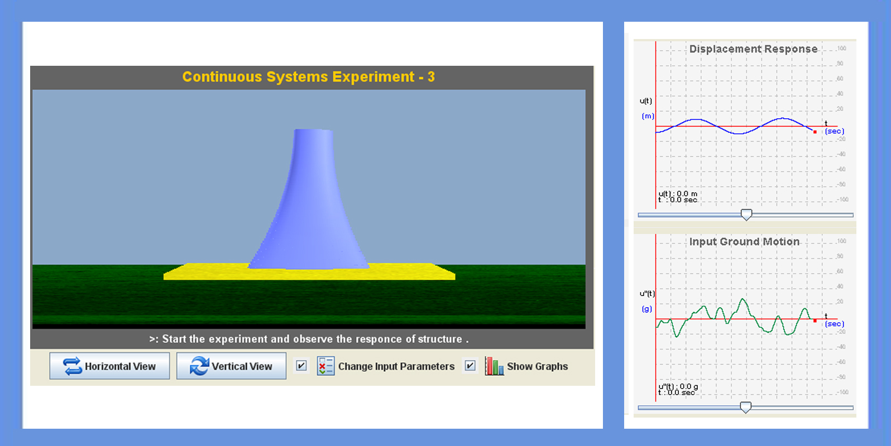
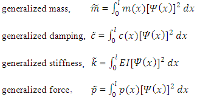

Some special type of structures like cooling towers , bunkers and silos are considered as continuous systems. These type of structures have importance in their functionality. Some of the continuous systems may have different type of profiles like rectangular, trapezoidal, hyperboloid etc. Their response due to dynamic loading varies for different profiles


The continuous systems are more complex systems for doing their analysis. So for developing analysis of this complex system, we will treat it as SDOF system which usually calls as generalized SDOF systems.
Equation of motion for a generalized SDOF system is,

where,


To know the response of structure for different profiles and for different behavior (shear(fixed), bending, shear(hinge)) of the structure.


Start the experiment with given values of structure and with given earthquake data. Observe the response of structure for different type of profiles.
Stage 1:
While coming to this stage, user can be able to change behavior of structure and its height. Observe the response of structure with modified parameters.
Stage 2:
In this last stage, user will change all the displayed parameters. User can observe the response of structure at different level in its height.

Q1.
In continuous system the material properties are same throughout the section
True
False
Q2.
Dimensions of the members are same throughout the structure in continuous system.
True
False
Q3.
Using generalized mass and stiffness we can know response.
True
False

Procedure for the experiment is as follows.

- Watanabe, T., Forced vibration of continuous system with nonlinear boundary conditions , ASME Journal of Mechanical Design 100, 1978, 487 491
- “Dynamics of structures” by Anil K chopra.
- Aoki, S. and Watanabe, T., Forced vibration of continuous system with unsymmetrical hysteresis loop characteristics , in Proceedings of Asia-Pacific Vibration Conference 93, Vol. 4, Japan Society of Mechanical Engineers, 1993, pp. 1680 1685.